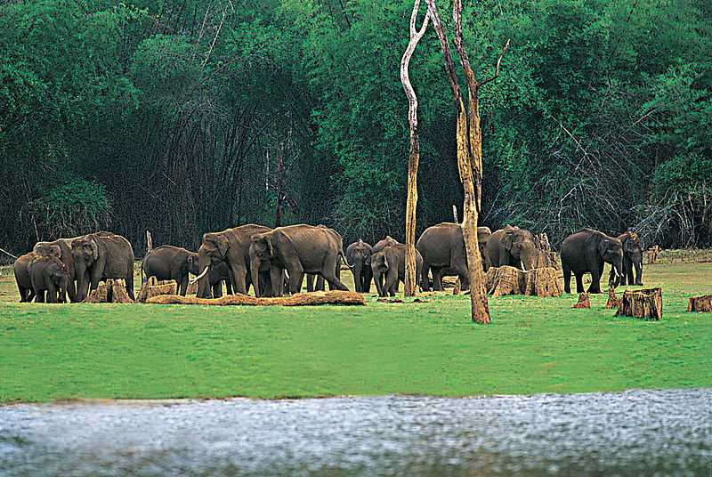
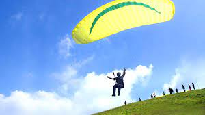
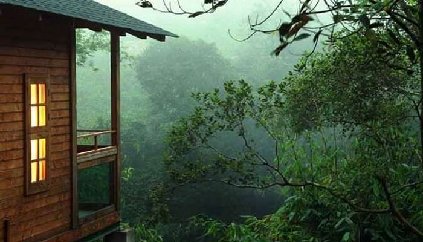
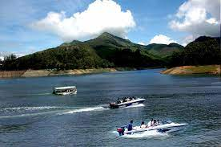

Places To Visit
Idukki Arch Dam

Idukki Arch Dam, an engineering marvel, is located in the South-Indian state of Kerala. It is an arch dam with a double curvature and is built on River Periyar.The dam is constructed in a gorge between two hills, Kuravathi and Kuravan. It is about 550 feet and is a breathtaking sight in the rugged terrain along which has been built.
Munnar

Munnar is a popular hill-station of Kerala perched at an altitude of 1600 metres in the Western Ghats. Famous for its tea estates, various shades of green, blankets of mist and craggy peaks, Munnar is aptly known as the 'Kashmir of South India'.Munnar is also blessed with natural view-points apart from the tea-plantations.
Thekkady
Home to the country's largest Tiger Reserve- Periyar, Thekkady is a great way to enjoy a jungle vacation. Periyar National Park, being a major attraction, is one place where you can enjoy bamboo rafting in the catchment area of Mullaiperiyar Dam, hiking, and in the midst of the wilderness, shopping!
Popular Things To Do
Paragliding in Vagamon Hills
an adventure sport that takes you closest to fly without wings in the beautiful hill station of Vagamon.
Staying at Misty Mountain Resort
An exotic stay at the Misty Mountain Resort is one of those things to do in Idukki that you can’t miss out on!
Boating In Idukki Dams
There are a lot of marvelous dams in the Idukki district that you ought to visit on your vacation..